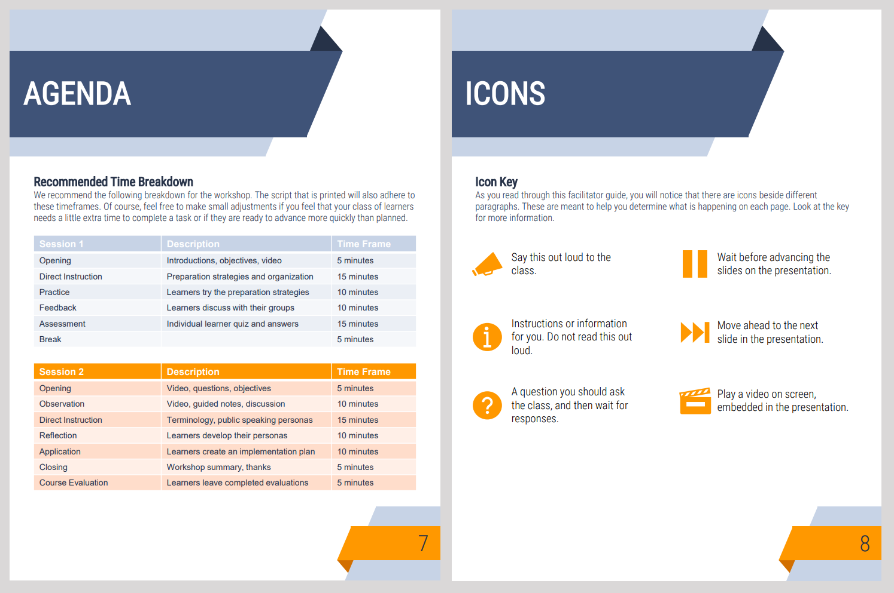

Undergraduate students, especially first-generation and rural students entering higher education, often lack foundational background experiences and instruction for success in the public speaking space. Even students who have received training or instruction in public speaking still have difficulty finding success in this area. Some students struggle with public speaking apprehension. Others deal with mental blocks surrounding the preparation of materials. Others still may believe in common misconceptions surrounding the “mystique” of public speaking. Regardless of the cause, the symptom is the same; many undergraduate students are unprepared for the public speaking and presentation tasks they will face in their careers. This lesson addresses this issue by providing students an opportunity to receive targeted and specific instructional support in public speaking.
The goal of this project was to design a print-based, in-person training program that could be packaged and given to any facilitator to run effectively. This meant that the format of the final product was established early on, but significant design influenced the content of the guides and workshop materials. An analysis of the potential learners and the intended learning context was conducted first. This helped me to narrow in on the specific audience and the problem that needs to be addressed. Knowing that I wanted to help learners become more effective at writing speeches, I next conducted a task analysis of the speechwriting and delivery process. The analysis forced me to approach the task in a very granular way and illuminated some very specific steps that were likely to be difficult for my learners. This gave specific direction to the content that should be included in the program. Then, I completed a design document to detail the specific outcomes and learning objectives for the training session. By establishing clear learning objectives before beginning the design process, I was able to create all the learner assessments and evaluation tools to ensure that they aligned directly with the intended outcomes. Knowing what the students should learn during the training and how they would be evaluated afterward made it very clear what content should be included. This directed me toward a “2 session” approach where the entire program is split into two segments focusing on specific objectives and content areas.




This lesson is loosely based on work I was doing for a university at the time, and I am very confident in the content and pedagogical approach. However, it has never been delivered by a “blind” facilitator as the guide is designed to support. I would like to get user evaluation data from learners experiencing the training session delivered in this manner to provide guidance on further revisions and enhancements.